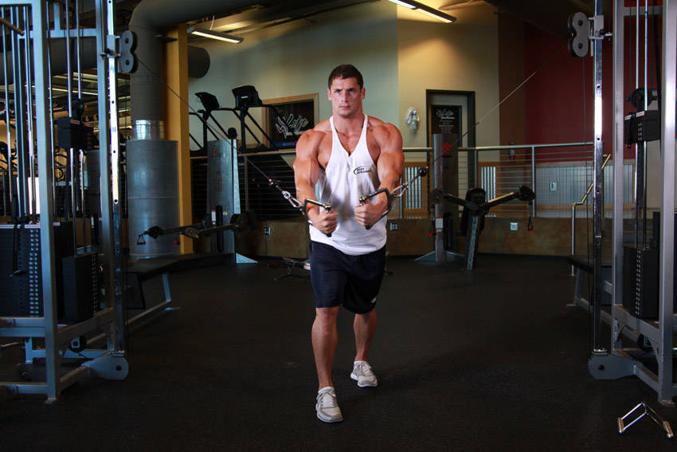

- To get yourself into the starting position, place the pulleys on a high position (above your head), select the resistance to be used and hold the pulleys in each hand.
- Step forward in front of an imaginary straight line between both pulleys while pulling your arms together in front of you. Your torso should have a small forward bend from the waist. This will be your starting position.
- With a slight bend on your elbows in order to prevent stress at the biceps tendon, extend your arms to the side (straight out at both sides) in a wide arc until you feel a stretch on your chest. Breathe in as you perform this portion of the movement. Tip: Keep in mind that throughout the movement, the arms and torso should remain stationary; the movement should only occur at the shoulder joint.
- Return your arms back to the starting position as you breathe out. Make sure to use the same arc of motion used to lower the weights.
- Hold for a second at the starting position and repeat the movement for the prescribed amount of repetitions.
This exercise appears in Programmd training programs. Take the quiz to find one for your gym.
Find your program